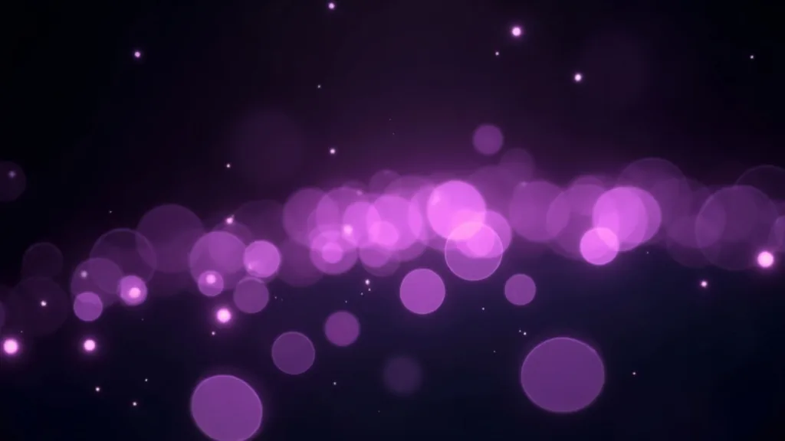
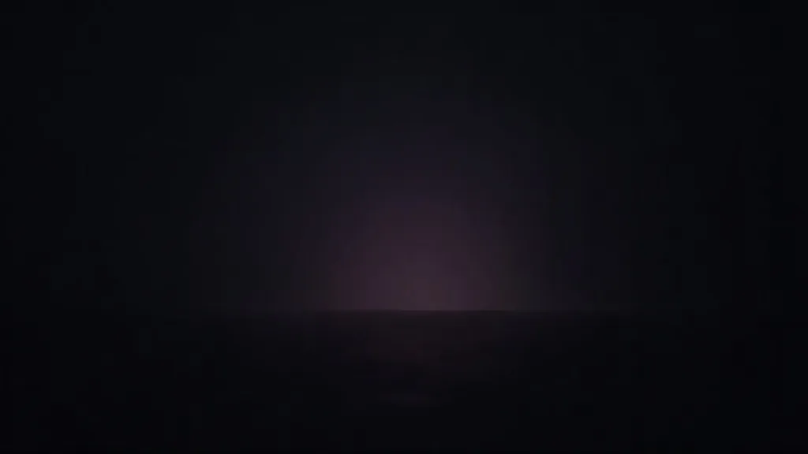
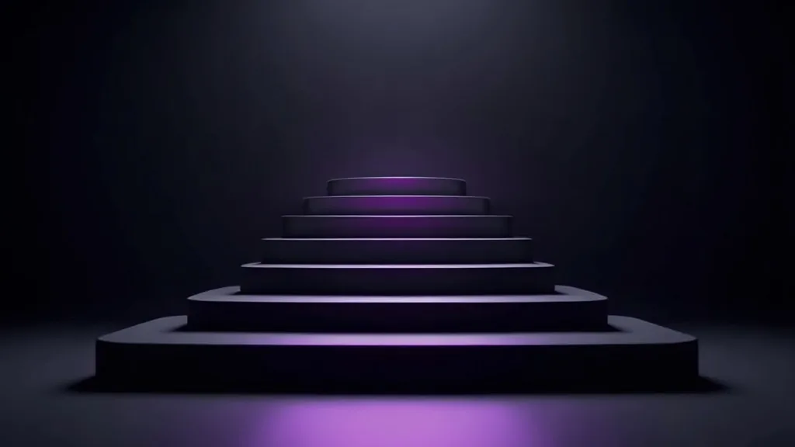

01
Ecomm Plus
$399/Mo
+$99.99/Additional Location- E-Commerce Integration
- SEO AI
- Works with ANY Website
- Full Service Installation
- Enhanced Security Features
- Unlimited SKUs
- Dutchie + Solution

Eight named cities, one card each. Read them in any order; the panel beside them stays put.
We are dedicated to helping your dispensary secure a top 3 ranking in local search results on Google.com. If we don't deliver on this promise, you won't be charged for our services.
We understand the importance of targeting your local audience. Through strategic keyword targeting, location-specific optimization, and local directory submissions, we ensure that your dispensary is visible to the right customers at the right time.
Your website is the digital version of your storefront. Anyone can make a website, but we make sales engines. We've designed over 100 websites for dispensaries and we know what works. We don't charge for web design & development because we only care about delivering what you need: a website that converts.

We understand that being in the top 3 local search results is crucial for driving organic traffic and attracting qualified leads. That's why we offer unique performance benchmarks to our clients: if we don't achieve a top 3 ranking for you, you won't pay for our services. That's how confident we are in our ability to optimize your online presence and deliver exceptional results.
Four of the nine published tiers are shown here. Each price is monthly and each per-location add-on is printed on its own card.
$399/Mo
+$99.99/Additional Location$1,200/Mo
+$200/Additional Location$2000/Mo
+$400/Additional Location$2,000/Mo
+$1,400/Additional LocationTiers 05 to 09 and the two bundled plans run on the pricing page. Nothing on this ladder sits behind a click.

Long-term relationships built on trust, transparency, & results since 2012